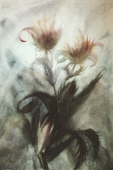

Gemälde
Nicht alle Bilder von Max Prantl sind erhalten (in gutem Zustand). Trotzdem gibt es noch einige sehr schöne, auffällige Gemälde, aus denen jetzt ein paar Ansichtskarten bestehen. Schön anzusehen, von meditativer Schönheit und auch einfach nur schön, um jemanden zu schicken.
Sie können auf ein Bild klicken, um die große Version zu öffnen und auf Ihrem Computer zu speichern.
 |
|||
|  | |||
 |
|||